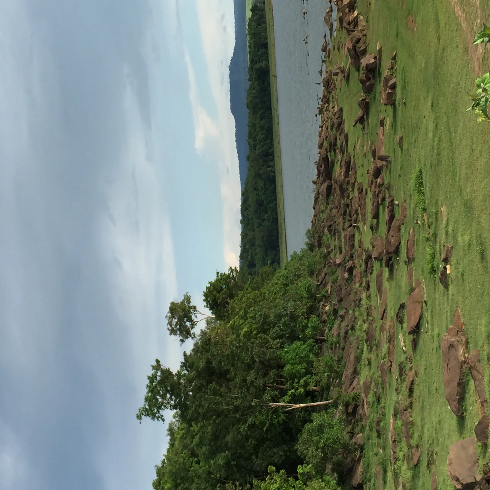

เกี่ยวกับจุดหมายนี้
ศรีสะเกษ เป็นจุดหมายด้านธรรมชาติในจังหวัดศรีสะเกษ เหมาะสำหรับใช้วางแผนการเดินทางและตรวจสอบข้อมูลสถานที่จากแหล่งอ้างอิง
สถานะข้อมูลสถานที่
ข้อมูลสถานที่เฉพาะ เวลาเปิด–ปิด และค่าเข้าชมกำลังรอตรวจสอบจากแหล่งทางการ จึงยังไม่แสดงข้อมูลคาดเดา
รูปภาพที่เชื่อมกับสถานที่

